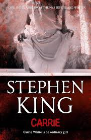

- 

Stephen King's "Carrie" is a gripping and harrowing tale that delves into the dark recesses of the human psyche and the devastating effects of unchecked cruelty. The story follows Carrie White, a shy and socially awkward high school girl who possesses telekinetic powers. Tormented by her peers and oppressed by her fanatically religious mother, Carrie's life is a constant struggle. King's masterful storytelling captures the intensity of Carrie's suffering and the relentless bullying she endures, making her ultimate descent into vengeance both tragic and terrifying. The novel's climax, set against the backdrop of a prom night turned nightmarish, is both shocking and cathartic, cementing "Carrie" as a seminal work in the horror genre.
King's debut novel is notable not only for its chilling narrative but also for its exploration of deeper themes such as the consequences of social isolation and the destructive power of fear and prejudice. Through Carrie's character, King paints a poignant portrait of a girl pushed to her breaking point, highlighting the importance of empathy and understanding. The novel's epistolary structure, incorporating newspaper clippings, letters, and personal accounts, adds a layer of realism and immediacy to the story, drawing readers in and making the horror all the more palpable. "Carrie" remains a timeless classic that continues to resonate with readers, showcasing King's unparalleled ability to blend supernatural horror with profound human emotion.